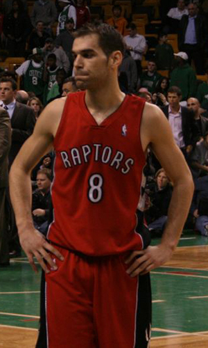

|  |
Матчи |
42 |
|
Передачи (всего/среднее) |
198 |
4.7 |
| В основе |
42 |
|
Подборы в защите (всего/среднее) |
105 |
2.5 |
| Время (всего/среднее) |
1270:13 |
30:15 |
Подборы в атаке (всего/среднее) |
19 |
0.5 |
| Очки (всего/среднее) |
382 |
9.1 |
Подборы (всего/среднее) |
124 |
3 |
| 2-очковые броски (всего/среднее) |
88/212 |
2.1/5 |
Перехваты (всего/среднее) |
31 |
0.7 |
| 2-очковые броски (% реализации) |
41.5% |
|
Потери (всего/среднее) |
75 |
1.8 |
| 3-очковые броски (всего/среднее) |
59/142 |
1.4/3.4 |
Блокшоты (всего/среднее) |
0 |
0 |
| 3-очковые броски (% реализации) |
41.5% |
|
Блокшоты соперника (всего/среднее) |
12 |
0.3 |
| Штрафные броски (всего/среднее) |
29/32 |
0.7/0.8 |
Фолы (всего/среднее) |
76 |
1.8 |
| Хосе Мануэль Кальдерон Борральо |
Штрафные броски (% реализации) |
90.6% |
|
Коэффициент полезности (всего/среднее) |
362 |
8.6 |